Now that you know how about encapsulation,
let's turn our attention to the topic of initialization.
In the last lesson, you used your applet's init()
method to initialize the fields of your bouncing ball, helped
along by the mutator methods that you developed.
Normally, though, you want to do things differently; instead of using mutators to initialize your objects, you should really use constructors. This lesson will teach you how to write constructors for the classes you create.
If you think of a class definition as the blueprint for
defining objects, then think of the new operator as the
factory for creating objects, using the instructions
contained in the constructor to customize each object
as required.

Constructors are kind of like init() methods
in some ways, and unlike methods at all in others. It's
probably best to put constructors in their own category.
When you define your own classes, you'll use constructors to:
- put each object into a known state when is created.
- allow users to create customized objects rather than using mutators to modify a single "stock" object.
Let's start by looking at how constructors work, and how you use one.
How Constructors Work
In Unit 8, you had a lot of practice using constructors;
you created GRect, GImage and
JButton objects (for instance), always by using
a constructor. But, you may not have given a lot of
thought to what actually happened when you did that.
As you've seen, constructors are used (or called) differently
than methods.
Instead of calling a constructor directly, you implicitly
call it by using the new operator.
When you use the new operator to construct an object,
the Java Virtual Machine carries out these actions, in order:
- First, it uses the class definition to see how much memory is required for the data portion (field definitions) in the new object. (Just like reading a blueprint to see what parts are needed, right?)
- Next, it allocates that memory from an area known as the heap. When it allocates the memory, it saves the address of the chunk of memory. (Like actually pulling the parts from inventory.)
- Next, it assigns the initial values to the data fields that you've defined. If you've supplied initial values when defining your fields, those values are used; otherwise each field is set to the default value.
- Next, if a constructor has been defined, the constructor is run. Usually the constructor initializes the rest of the fields.
- Finally, the saved memory address is returned. Usually, you'll store that address in an object variable.
AppletBounce5 and the ConstructorBall Class
To show you how to work with constructors, we'll develop one
more bouncing ball class, this one imaginatively
named ConstructorBall. Along with the
ConstructorBall class, we'll write another
applet, AppletBounce5.
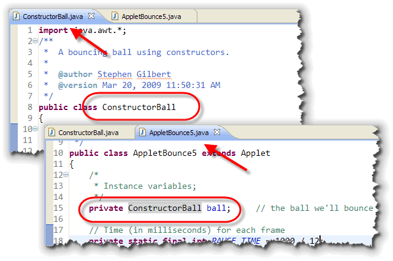
To create the skeletons, I've just copied the two programs from the last lesson, renamed them and changed theball instance variable to a
ConstructorBall instead.
Once you add a constructor to your ConstructorBall
class, users will be able to eliminate the unnecessary
mutator code inside the applet's init()
method, and easily create customized Ball
objects, just like they do for the other classes
you've been working with, like GOval
and JLabel.
So, open the ConstructorBall source code, and
let's take a look at constructor syntax.
Constructor Syntax
Constructors are defined, much like methods, inside a class
definition, but the syntax for defining a constructor is slightly
different than the syntax you use for defining a method.
A constructor looks exactly like a
method definition with two constraints:
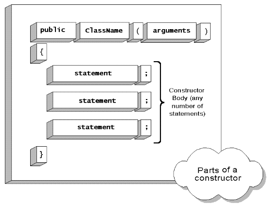
- A constructor will always have the same name as the class that contains it. There are no exceptions.
- The constructor will have no return type, not even void. Writing a constructor definition using a return type does not create a syntax or runtime error. It just doesn't work. If it has a return type, then it is a method, not a constructor, even if it has the same name as the class.
Constructors almost always start with the
keyword public, which is always followed
by the name of the class. The class name is then
followed by a pair of parentheses containing any arguments.
If no arguments are required, then the parentheses are empty.
Inside the body of the constructor, which is delimited by braces, just like the body of a method, you can have any number of statements. The purpose of these statements is to initialize the fields in your newly created object.
Default and No-Arg Constructor
If you look inside our newly created ConstructorBall
class, it's obvious that there is no constructor defined.
Nevertheless, inside the AppletBounce5 init()
method, you'll find a line of code that looks like this:
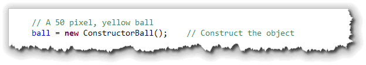
Since we didn't write a construtor, and thenew
operator always calls the constructor, then where did
this "invisible" constructor come from?
The truth is, you don't have to write a constructor for your classes. If your class does not contain an explicit constructor, then Java will "write" an implicit for you. This implicitly written constructor is called the default constructor.
The default constructor doesn't actually do any initialization, beyond initializing all the fields to a known value (usually 0). And, if you add any explicit constructors at all, Java will "remove" the invisible default constructor that it originally gave you.
The "No-Arg" Constructor
You can write your own version of the default constructor. This is called the no-arg constructor, and it will be called in place of the default constructor, if you write one for your class. Its purpose is to initialize each field in the object to a predefined or default value, so the object is in a usable state.
Let's try adding a no-arg constructor to ConstructorBall.
Start by simple writing the constructor "skeleton", like this:
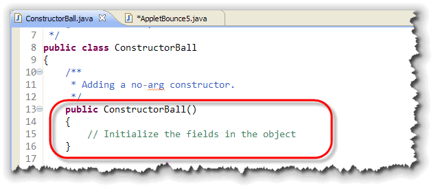
As you can see, the no-arg constructor:- starts with the keyword
public - has no return type, not even
void - has the same name as the class
- has no arguments or parameters defined
So, what should you put in the body of the no-arg constructor.
Well, since the purpose is to put the object into a predefined
state, just copy the code from the AppletBall5 init()
method that previously initialized your ball:
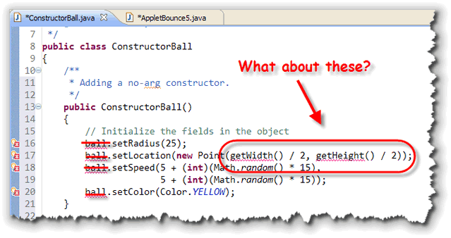
Once you've copied the code over, notice that there are two problems:- There is no ball object. The code is now
inside the
ConstructorBallclass. Fixing this is easy; just remove theball.in front of each line as I've shown here. - You can't call
getWidth()orgetHeight()when setting the location of the ball. Those are both applet methods, notConstructorBallmethods, and this code is no longer part of your applet.
There is no easy fix for the second problem (at least, there is
no easy fix in terms of the no-argument constructor). Instead,
for right now, just set the ball to some random location on
the screen, making sure that it is, at least, some distance
from the top and left margins. Here's some code that does
that:
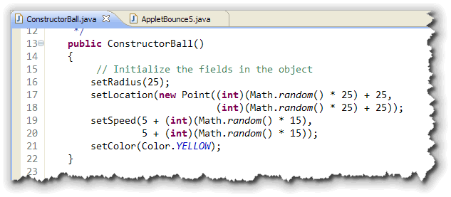
Once you've done that, you can just remove all of the initialzation code fromAppletBounce5. When
you're done, your applet does not access any of the
ball's data elements. Instead, it simply creates a
ball object, and tells it to move() and
draw() itself. How that happens is
entirely up to the ConstructorBall class itself.
Here's the applet's init() method after making
this change:
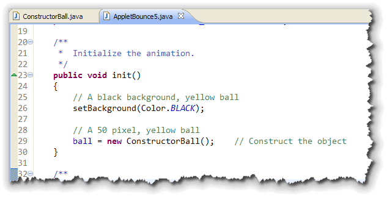
Overloaded Constructors
The purpose for writing a no-arg constructor is to put your
objects into a known state when they are created. But a known
state is not the same as an ideal state. For instance, a
JLabel or JButton with no text are not
very useful.
The same thing is true with the no-argument
ConstructorBall constructor. Adding
a non-arg constructor made it possible to create
ConstructorBall objects without accessing the
internal memebers of the class. However, it doesn't make
it very easy to create customized bouncing balls
for our applet.
What we'd really like to do is be able to use the class something like this:
Point center = new Point(getHeight()/2, getWidth()/2);
ball1 = new ConstructorBall(10); // radius of 10
ball2 = new ConstructorBall(15, center); // small & centered
And, maybe some others. For both of these, we'll need to add additional constructors that take parameters or arguments.
The Working Constructor
Normally, when designing constructors, there will be one constructor that allows you to initialize most of the fields. This constructor is usually called the working constructor.
Which Fields Should Be Initialized?
When talking about the working constructor, you'll often hear
people say that the working constructor should give the user
the ability to intialize all of the object's fields. That is
often true, but not always.
The working constructor is the constructor that allows you to
specify values for all of the user-definable fields.
It is very common for a class to have fields which are
automatically intialized through a built-in calculation, often
involving other fields. When this is the case, it is important
that those fields not be initialized through arguments
passed to the working constructor.
Since the ConstructorBall class has five different
fields, the working constructor would normally allow you
to set all of them. However, for example's sake,
let's assume that we want the
ball to always set its velocity using a random value.
An Eclipse Shortcut
As you might have guessed, Eclipse has a shortcut that will
get you started with the working constructor. Just choose the
Source menu, and then select Generate Constructor
Using Fields as shown on the left-hand side of this
screenshot:
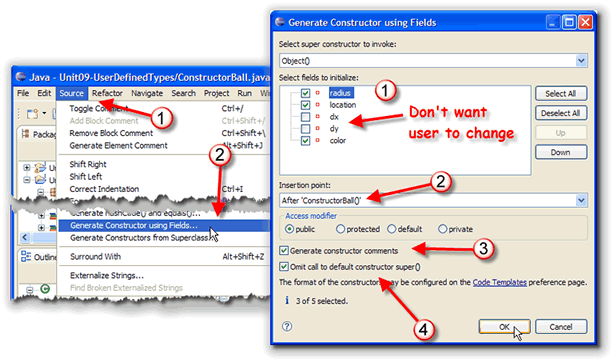
On the right-hand side, you'll see the dialog box with the options you can fill out to generate your constructor:- First, you can select the fields that you want
to be automatically initialized. For instance, if I want to
have the speed set automatically and randomly, just
uncheck the
dxanddyvariables, as I've done here. - Next, select where you want the new constructor to appear. I'm going to put it right the no-arg constructor that I wrote in the previous section.
- I always click the "generate comments" button. (I wish there was some way I could check "always" for that.)
- Finally, for simply classes, you normally want to
omit the call to the default
super()constructor. This will be important later, when you start extending existing classes.
Since we skipped two of the fields, though, you have to add the code to initialize the missing fields. Remember:
make sure your constructor initializes every field.
To finish the working constructor, you need to initialize
dx and dy like this:
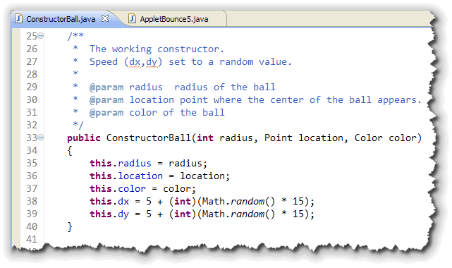
Using the Working Constructor
To use the working constructor, you need to change
AppletBounce5 like this. Instead of using the
default, 50-pixel wide ball, I've initialized ball
to a 20-pixel red ball, and placed it in the center of the
screen:
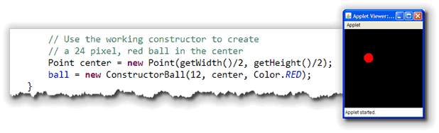
Using this
When you send a message to an object, you are, in effect,
calling one of that object's methods. When an object is
running a method, you can refer to the object that is running
the method by using the keyword this.
It turns out that this is less useful than it might
seem. Most of the things that you can do by using the keyword
this, are easily done in another manner. For
instance, inside a method, you can tell the current object to
execute one of its methods by sending the message to
this, like so:
public void init()
{
// Tell this applet to add myButton
this.add(myButton);
}
If you don't use this, however, the message is sent
to the current object anyway, so most folks just don't bother.
Parameter or Field?
One place where this is useful is in
differentiating instance variables from
formal arguments of the same name. If you notice in the
ConstructorBall working constructor I used the names
radius, location and color
for the parameters that are used to initialize the
fields or the same names.
When you use the same names for parameters, as for fields,
you must use the keyword this to allow
Java to tell which is which.
Since this refers to the "current" object,
this.radius is a field, but radius
is the formal parameter passed to the ConstructorBall
constructor. To avoid a surfeit of confusion, by convention
this construction is only used in constructors and in
mutators.
Using this()
You may have noticed that much of the code inside the working constructor is repeated inside the no-arg constructor. If we add more constructors, then you'll end up repeating even more code.
To avoid this duplicated code, you can:
- write the working constructor first.
- call the working constructor from your other constructors, passing default values for the missing parameters.
Since you can't actually call a constructor like you
can call a method, the short cut way to do it is to use the
psuedo-constructor named this(). Here's
an example of the no-arg constructor, rewritten to use
this technique:
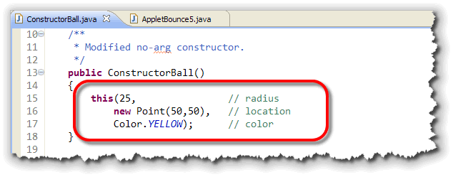
When you do this, instead of initializing the fields directly, the working constructor is called, and the value 25 is passed to theradius parameter in that constructor,
(and so on for the remaining parameters.)
The only "downside" to doing it this way, is that when you use
this() to call another constructor in the same class,
it must be the first line that appears in the constructor.
If you try to create a Point object containing the
default location, and then call this(), your code
will not compile.
You can however, have more lines following
the call to this(). That means you can use one
constructor to do the "base" initialization, and then add
more customization to the initialized object.
Constructor Review
Here are the things you should remember about constructors:
- Constructors are used to create objects.
- Constructors act like an object factory, with the class definition working as a blueprint.
- Constructors are called by using the
newoperator. - Constructors have the same name as their class.
- Constructors never have a return value.
- Constructors may have parameters, allowing you to customize object construction.
- Constructors may have no parameters, but provide a default value for every field instead.
- Use
this.to refer to fields inside a constructor. - Use
this()to call one constructor from another.
Coming Up Next ...
In this lesson, you learned how to write constructors
to initialize your objects. The no-arg constructor
provides a default value for each field. The
working constructor allows the user to specify
values for most (or all) fields. Using this()
allows you to call one constructor from another.
In the next lesson, you'll learn how to add static members and how to understand variable and method scope.